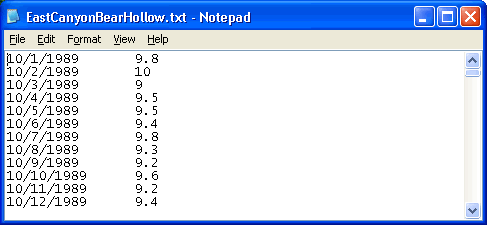
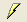
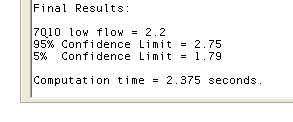

When developing a TMDL, design conditions are those critical conditions that must be specified in order to determine attainment of water quality standards. In specifying conditions in the waterbody, an attempt is made to use a reasonable "worst case" condition. For example, stream analysis often uses a low flow (e.g., 7-day low flow, once in 10-years commonly known as 7Q10 or biologically-based 4-day 3-year flows) high temperature design condition.
To estimate the 7Q10 low streamflow at a particular location, you must have a data set of observed (or modeled) daily streamflow records for several years at the location. Missing data is accomodated in Low Flow Calculator™ by only computing the 7-day average low flow for those periods where data exist. Because of this, it is important that there be an adequate number of consecutive observations each year in the daily streamflow recordset. Use the Parameters dialog (accesible through the menu item: "Options|Change Parameters") to set the averaging period to 7 days, and the return period to 10 years. Ensure that the "Low flow" radio button is selected, and choose the period of the year to be used for the computation (typically January through December). The following figure shows the parameter settings for a 7Q10 low streamflow calculation:

To use your data in Low Flow Calculator™, you must save it in an ASCII text format, one line per observation, with dates and streamflow values separated by commas or tabs. Load your data file into Low Flow Calculator™ using the "File|Load Data File" menu item. The following figure shows the ASCII formatting required by Low Flow Calculator™:

Once your data file is loaded into Low Flow Calculator™, you can compute the 7Q10 low streamflow value by clicking the "Compute 7Q10"  button on the tool bar. The results will be displayed in the "Report" text area as shown below:

Results of the analysis will include an estimate of the 7Q10 low streamflow value with 5% and 95% confidence limits. The confidence limits give you a feel for the robustness of the 7Q10 estimate. The tighter the confidence limits, the more confidence you can have in the 7Q10 estimate. Factors that increase the confidence bounds include: using a small number of years of data and using data that fluctuates dramatically year to year.
Once you have computed the 7Q10 streamflow, you can use it in your computations of contaminant load in a stream by multiplying it by the concentration of contaminant.
For more information, please see:
USEPA (2002). "Appendix D - Selected Technical Considerations." Guidance
for Water Quality-Based Decisions: The TMDL Process [online] URL: <http://www.epa.gov/OWOW/tmdl/decisions/decapd.html
>.